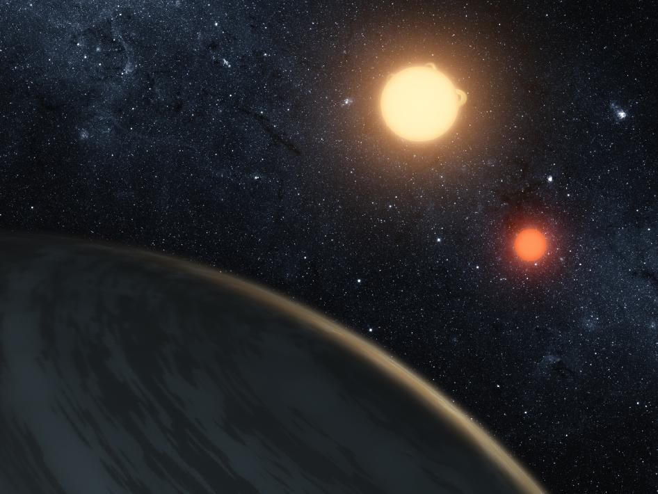

Kepler Space Telescope
Breve Historia
El Observatorio Espacial Kepler es un ahora difunto telescopio cual su rol principal fue el de la búsqueda de planetas del tamaño de la Tierra orbitando otras estrellas. A diferencia del HST y del JWST este no orbitaba la Tierra, sino que tenía una órbita heliócentrica.

Ficha Técnica:
- Fecha de Lanzamiento: 2/01/1995
- Estado: Desactivado
- Fecha de Desactivación: 15/11/2010
Top 3 Descubrimientos
El gigante gaseoso Kepler-16b es el primer exoplaneta que se descubrio con dos soles en su cielo. Recuerda a Tatooine el famoso planeta de la serie de películas Star Wars. El descubrimiento fue hecho en Septiembre del 2011.
Kepler-10b es el primer "incuestionablemente rocoso" exoplaneta descubierto. Con una temperatura altísima, este mundo es 1.4 veces el tamaño de la Tierra y se encuentra a 560 años luz.
El pequeño exoplaneta Kepler-37b, anunciado en Febrero del 2013, es apenas más grande que la Luna, orbita su estrella cada 13 días y es probable que tenga una temperatura superficial superior a 400°C.